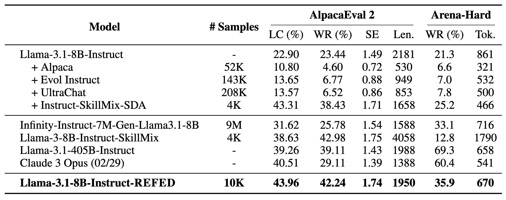

Synthetic data has been a powerful driver in advancing LLMs. It enables the creation of high-quality datasets at scale, overcoming the obstacles that come with manual data collection - such as high costs, time, and effort. Building upon this, we introduce a novel methodology for synthesizing high-quality instruction-tuning datasets using Reference-Level Feedback.
Our method revolves around collecting feedback from high-quality reference samples. This feedback captures the desirable characteristics that make these reference samples effective, and we use it to guide the synthesis process. Our experimental results demonstrate significant improvements in the synthesized data quality and efficiency compared to traditional feedback approaches.
An overview of our data synthesis pipeline. Starting from our seed data, we select a reference sample and collect Reference-Level Feedback for both the instruction and response. Instruction feedback is used to synthesize new instructions. We generate their corresponding responses, and then improve it using the response feedback.
Reference-Level Feedback
Feedback is a well-known approach for improving synthetic data quality. Traditional approaches operate at the sample-level: an LLM generates a response, receives feedback (either through self-reflection or an external source), and then refines its original response. This approach has proven effective in enancing LLM performance on alignment benchmarks and reinforcing key principles such as helpfulness and truthfulness.
Our method takes on a different approach by collecting feedback at the reference-level, from the carefully selected reference samples in seed data. Many approaches already use seed data as in-context examples during the synthesis process. We further leverage it by systematically analyzing the samples and capturing information about their desirable characteristics (i.e. clarity, relevance) through feedback. This feedback is then used throughout the synthesis process.
Comparison of feedback approaches for data synthesis. Left: Traditional sample-level feedback generates and applies feedback individually for each sample. Right: Our Reference-Level Feedback approach collects feedback once from a high-quality reference sample and applies it to synthesize and improve multiple new samples.
To be more specific, feedback is collected on both the instruction and response components of each reference sample. The instruction-specific feedback is used to guide the synthesis of new instructions, and response-specific feedback is used to refine the corresponding responses. Since synthesized instructions share key characteristics of their reference counterparts, response-specific feedback remains relevant and is used to improve the quality of synthesized responses. This framework enables us to systematically propagate the desirable qualities of reference samples to newly generated samples, establishing overall higher quality standards for data synthesis.
Experiments
We present REFED, a high-quality instruction tuning dataset made up of 10K samples. It was created using our framework, with GPT-4o-mini as our teacher model and the LIMA training dataset as our seed data.
To evaluate the effectiveness of our dataset, we finetune various language models then assess their instruction-following abilities with AlpacaEval 2.0 and Arena-Hard. These benchmarks use an LLM as a judge to compare model responses against reference responses and present metrics like the win rate or length-controlled win rate.
How Effective is Reference-Level Feedback for Data Synthesis?
To demonstrate the effectiveness of Reference-Level Feedback, we finetune Llama-3.1-8B-Instruct on datasets synthesized using several approaches:
No feedback: just the seed dataset, no synthesis.
Reference-Level Instruction Feedback: Using instruction feedback to synthesize new instructions, then generating a response for these instructions.
Reference-Level Instruction Feedback and Sample-Level Response Feedback: Using instruction feedback to synthesize new instructions, generating a response for these instructions, collecting sample-level feedback on this response, then improving it.
Reference-Level Instruction + Response Feedback: Our proposed framework, using both reference-level instruction and response feedback.
Analysis of the different components of Reference-Level Feedback for data synthesis. We evaluate the impact of the instruction and response feedback, and also compare against traditional sample-level feedback for response improvement. Results show performance after finetuning Llama-3.1-8B-Instruct on each generated dataset. Green subscripts indicate improvements after fine-tuning. Metrics shown are: Length-Controlled Win Rate (LC), Win Rate (WR), Standard Error (SE), Average Length (Len.), and Average # Tokens (Tok.).
The results show an increase in performance everytime we introduce a component of our framework. We also see that the models trained on datasets synthesized with Reference-Level Feedback outperform those trained on datasets that were synthesized with sample-level feedback.
How Does Our Method Compare Against Other Baselines?
We compare our model against various other baselines. This includes Llama-3.1-8B-Instruct finetuned on various well-known synthetic datasets, as well as leading SFT-based, 8B-parameter models from the AlpacaEval 2.0 leaderboard. Our results shows that training on our dataset achieves state-of-the-art performance, and even sometimes outperforms significantly larger and more powerful models such as GPT-3.5 and Llama-3.1-405B-Instruct.

Evaluation results of Llama-3.1-8B-Instruct finetuned on REFED against selected baselines. Top shows results from finetuning on various synthetic datasets. Middle shows the performance of leading models from AlpacaEval 2.0 leaderboard. Bottom shows our model trained on REFED. Results demonstrate that our model outperforms these baselines across both evaluation benchmarks.
Does REFED Generalize To Different Model Architectures?
We also show that finetuning on REFED yields improvements across different models (Llama-3.1-8B and Mistral-7B) for both the base and instruct variants. Our results demonstrate consistant improvement across all model variants, with the instruct variant showing the most significant improvements. Notably, the base models finetuned on REFED either outperform or are competitive with their instruct counterparts.
Evaluation results of finetuning REFED on the base and instruct variants of Llama-3.1-8B and Mistral-7B models. Green subscripts indicate improvements after finetuning. Note that we do not report base model performance because they are not instruction-tuned.
Does Filtering Enhance the Effectiveness?
Lastly, we explore the effectiveness of different filtering strategies:
LLM-Judge Filtering: We use an LLM judge to compare the original respone with the improved response. We keep the samples where the improved response is ranked higher than the original response.
ROUGE-L Similarity Filtering: Starting wih a randomly selected sample, we iteratively add candidates where the instruction's maximum similarity score with existing instructions is below a certain threshold.
Using these methods, along with random sampling, we create samples of size 1K, 2K, 4K, and 8K. We fintune Llama-3.1-8B-Instruct on these subsets and report the length-controlled win rate in the graph below. Results indicate that LLM-Judge filtering is the most effective, with the ROUGE-L similarity filtering also showing some improvements.
Length Controlled Win-Rate on AlpacaEval 2.0 for Llama-3.1-8B-Instruct finetuned on various subsets of REFED, based on different filtering strategies.
BibTeX
@misc{mehri2025samplelevelfeedbackusingreferencelevel,
title={Beyond Sample-Level Feedback: Using Reference-Level Feedback to Guide Data Synthesis},
author={Shuhaib Mehri and Xiusi Chen and Heng Ji and Dilek Hakkani-Tür},
year={2025},
eprint={2502.04511},
archivePrefix={arXiv},
primaryClass={cs.CL},
url={https://arxiv.org/abs/2502.04511},
}